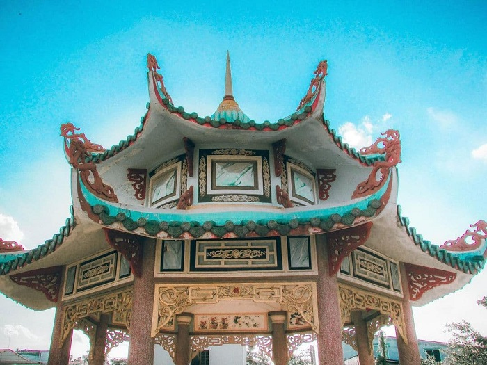
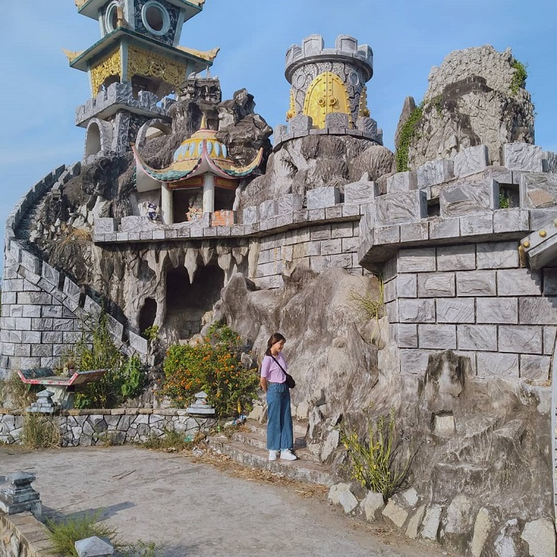
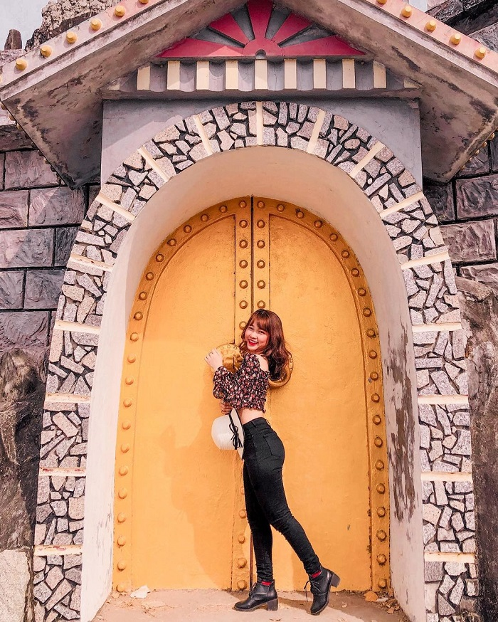
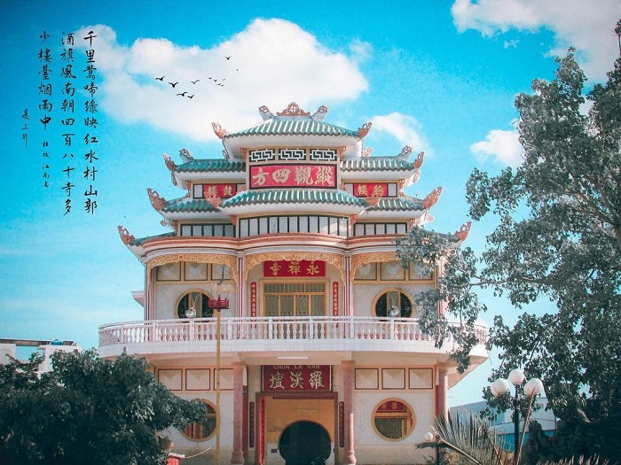

Tọa lạc ở số 131 Điện Biên Phủ, xóm Cầu Đen, phường 8, thị xã Sóc Trăng, chùa La Hán sở hữu kiến trúc khác lạ cùng không gian rộng lớn và khuôn viên đẹp. Đây là nơi tuyệt vời để du khách vãn cảnh, hành hương vào các dịp lễ Tết xuân về.
Chùa La Hán – Sóc Trăng là ngôi chùa do người Hoa thành lập. Nguồn: focusasiatravel.vn
Theo ghi chép, từ thuở sơ khai, chùa La Hán Sóc Trăng được xây từ năm 1952 chỉ là một căn nhà lá, vách ván. Tới năm 1956, một cơn bão đi qua đã khiến chùa bị hư hỏng nặng. Sau đó, người dân đã xây dựng lại chùa bằng gạch ngói. Đến năm 1990, cư dân và Phật tử khắp nơi đóng góp để xây dựng lại một ngôi chùa mới khang trang hơn.
Chùa La Hán được xây dựng từ năm 1952. Nguồn: focusasiatravel.vn
Ngôi chùa có nhiều nét kiến trúc độc đáo, khác biệt. Nguồn: focusasiatravel.vn
Kết cấu của chùa gồm một tầng trệt và một tầng lầu, khuôn viên rộng và đẹp. Trong đó, khu vực tầng trên là nơi thờ Phật Thích Ca, Thái Thượng Lão Quân, Chư Bồ Tát và Thập Bát La Hán. Các bức tượng Phật bày trí cẩn thận, toát lên vẻ đẹp uy nghiêm của chốn thiền tịnh. Khu vực tầng dưới là nơi nhà chùa thờ Thiên Hậu Nương Nương, Ôn Thần, Bạch hầu Công, Chư Tiên Cô và Tiên Hữu. Các bức tượng được bày trí trang trọng, thể hiện được sự nghiêm nghị và linh thiêng bên trong khuôn viên chùa.
Chùa có hai tầng lầu thờ các vị Phật. Nguồn: focusasiatravel.vn
Có thể nói rằng chùa La Hán là một điểm đến tâm linh đẹp và mang vẻ đẹp khác biệt hẳn so với những ngôi chùa Khmer trong vùng. Có dịp du lịch Sóc Trăng, bạn nhớ ghé thăm chùa để vãn cảnh, chụp vài bức ảnh kỷ niệm.